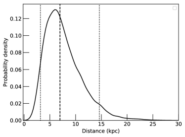
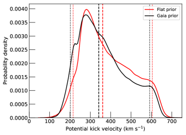

الحد الأعلى الصارم لقدرة النفاثة في مصدر الحالة اللينة المستديم 4U 1957+11
الملخص
نقدّم حدودا عليا عميقة للغاية على الانبعاث الراديوي من 4U 1957+11، وهو ثنائي أشعة سينية يُعتقد عموما أنه ثقب أسود يتراكم باستمرار ويكون في الحالة اللينة في معظم الأوقات. نناقش بحثا أشمل عن الانفجارات من النوع I مما ورد في الأعمال السابقة، كاشفين عن حد أعلى صارم لمعدل الانفجارات، مما يعزز فرضية أن الجسم المتراكم ثقب أسود. إن عدم كشف هذا المصدر عند مستوى ضجيج يبلغ 1.07 Jy/beam يشير إلى كبح للنفاثة أقوى مما هو متوقع حتى في أكثر نماذج الأقراص الرقيقة تطرفا لإنتاج النفاثات الراديوية؛ فالقدرة الراديوية هنا أقل بمقدار 1500–3700 مرة من الاستقراء الناتج عن علاقة الحالة الصلبة بين الراديو والأشعة السينية، مع اعتماد أوجه عدم اليقين أساسا على مسافة المصدر ضعيفة التقييد. ونناقش أيضا موضع المصدر وسرعته، ونبيّن أنه لا بد أن يكون قد تكوّن إما في الهالة أو مع ركلة ولادية لا متناظرة قوية.
keywords:
الأشعة السينية: الثنائيات – الأشعة السينية: مصدر منفرد:4U 1957+11 – الحركات الخاصة – النجوم: النفاثات1 مقدمة
تؤثر النفاثات النسبية بقوة في طائفة من العمليات المهمة في الكون. وتوفر النفاثات الصادرة من الثقوب السوداء فائقة الكتلة أحد المصادر الرئيسة للتغذية الراجعة في الوسط بين النجمي (Silk & Rees, 1998)، كما توفر إحدى الآليات الرئيسة لتسريع الجسيمات الأعلى طاقة في الكون (Hillas, 1984). وبما أن النفاثات قد تُستمد طاقتها من ثقوب سوداء دوّارة (Blandford & Znajek, 1977)، فإن فهم آلية إنتاج النفاثات القوية والعوامل التي ترتبط بها قدرة النفاثة قد يتيح وسائل جديدة لسبر توزيع دوران الثقوب السوداء. وقد يكون هذا مفيدا على نحو خاص لأغراض مثل ربط بيئات الثقوب السوداء فائقة الكتلة بتواريخ دورانها، وهو ما يتطلب عينات كبيرة تستبعد على الأرجح المقاربات المعتمدة على كل مصدر على حدة، مثل نمذجة الانعكاس (García et al., 2014) التي تمتلك أفضل إمكانية لإعطاء تقديرات دقيقة للدوران في الأنظمة المنفردة.
تعاني الدراسات المباشرة للثقوب السوداء فائقة الكتلة من تحديات متعددة لا تنطبق على الثقوب السوداء ذات الكتلة النجمية. فالثقوب السوداء فائقة الكتلة لا تُظهر إلا تغيرية ضعيفة وعشوائية على المقاييس الزمنية البشرية، في حين تُظهر الثقوب السوداء ذات الكتلة النجمية غالبا تغيرية بعوامل تبلغ أو أكثر على مقاييس زمنية قدرها أشهر. علاوة على ذلك، تكون تقديرات الكتلة للثقوب السوداء ذات الكتلة النجمية أدق عموما، ولها انحيازات منهجية مفهومة بصورة أفضل مع مسارات أوضح للتحسين. ومن ثم فإن تطوير فهم لكيفية عمل العمليات في ثنائيات الأشعة السينية واستقراء تلك النتائج إلى الثقوب السوداء فائقة الكتلة يمثل مقاربة مثمرة (انظر مثلا Merloni et al. 2003).
من أوائل النتائج الواضحة في فهم تشكل النفاثات، التي جاءت من ثنائيات الأشعة السينية، أن قدرة النفاثة في الحالات الطيفية التي تهيمن عليها الأشعة السينية اللينة، مع انبعاث حراري قوي، أضعف بكثير مما هي عليه في الأنظمة التي يهيمن على انبعاثها الأشعة السينية الصلبة (Tananbaum et al., 1972). وللأسف، كان الحماس المحيط باكتشاف الانتقالات المترابطة في الأشعة السينية والراديو من Cygnus X-1 في ذلك الوقت راجعا أساسا إلى أنه قدم دليلا على نظير راديوي لمصدر الأشعة السينية، مما أتاح دقة زاوية كافية للتحقق من النظير البصري الصحيح. ولذلك مر نحو عقدين قبل أن تُقدّر أهمية هذا الاكتشاف تقديرا كاملا، ثم وُجد أن الارتباط القوي بين انبعاث الأشعة السينية الصلبة والانبعاث الراديوي واسع الانتشار (Harmon et al., 1995; Hannikainen et al., 1998; Fender et al., 1999).
أسس العمل النظري منذ ذلك الحين إطارا يمكن ضمنه فهم هذه الارتباطات. والأرجح أن النفاثات تستمد طاقتها من المكونات القطبية للحقول المغناطيسية في أقراص التراكم المضيفة لها. ففي الحالات الطيفية اللينة، تُنمذج أقراص التراكم بصورة جيدة على أنها أقراص رقيقة هندسيا وسميكة بصريا، وتنتج أطيافها بوصفها مجموع سلسلة من الأجسام السوداء المخففة (Shakura & Sunyaev, 1973; Novikov & Thorne, 1973; Davis & Hubeny, 2006). وتنتج هذه المقاربة نموذجا طيفيا جيدا على نحو ملحوظ للبيانات المتاحة. وعندما تهيمن الأشعة السينية الصلبة، فإن الانبعاث يرجح أن يأتي من التبعثر الكومبتوني الصاعد في وسط سميك هندسيا ورقيق بصريا (Thorne & Price, 1975; Sunyaev & Truemper, 1979). وبما أن ارتفاع المقياس الهندسي لتدفق التراكم قرب الثقب الأسود يكون عندئذ أكبر بكثير، فينبغي أن يكون المكون القطبي للحقل المغناطيسي أكبر.
تقضي معظم ثنائيات الأشعة السينية ذات الثقوب السوداء معظم حياتها في الحالتين الطيفيتين “الصلبة” والساكنة. ففي عابرات الأشعة السينية اللينة النموذجية، تبقى المصادر في حالات صلبة خافتة لفترات طويلة، ثم تتعرض لعدم استقرار في القرص يطلق ارتفاعا سريعا في اللمعان، وتتبع حلقة هسترة تنتقل فيها من الحالة الصلبة إلى اللينة عند لمعانات أعلى من تلك التي تنتقل عندها من اللينة إلى الصلبة (Miyamoto et al., 1995; Maccarone & Coppi, 2003). ويُرى عموما توهج راديوي شديد جدا في الانتقالات من الصلبة إلى اللينة، لا في الانتقالات من اللينة إلى الصلبة، وقد فُسر ذلك بأنه ناشئ عن قذائف سريعة تُطلق عند انتقالات الحالة وتصطدم بقذائف أكثر كثافة وأبطأ حركة من الحالة الصلبة السابقة الطويلة الأمد عندما يحدث الانتقال من الصلبة إلى اللينة، في حين لا توجد عند الانتقال من اللينة إلى الصلبة قذائف قريبة حاضرة (مثلا Vadawale et al. 2003). وفي Cygnus X-3، يتعزز الانبعاث الراديوي في جميع الحالات الطيفية نسبة إلى مصادر أخرى، ويُرى أقوى توهج عند العودة من الحالة اللينة إلى الحالات الصلبة الأكثر شيوعا (Koljonen et al., 2013). ويفسَّر ذلك بأفضل صورة بسيناريو لا يكون فيه سطح العمل للنفاثة في Cygnus X-3 مادة نفاثة أخرى، بل الريح النجمية، بحيث إنه عندما تنطفئ النفاثة لمدة طويلة في الحالة اللينة، تتاح للريح فرصة ملء التجويف الذي كان قد أُفرغ (Koljonen et al., 2018).
قد تمثل الكشوف في الحالة اللينة من الثقوب السوداء ذات الكتلة النجمية التي تكون غالبا في حالات صلبة (مثلا Rushton et al. 2012) إما إمدادا حقيقيا للنفاثة بالطاقة في الحالة اللينة أو انبعاثا عابرا متبقيا. أما كشوف الحالة اللينة من Cyg X-3 فمن المرجح أن تكون مدعومة، على الأقل جزئيا، بالانبعاث الحر-الحر الشديد جدا من ريح النجم المانح من نوع Wolf Rayet، أو بتصادم بين ريح WR وريح القرص الصادرة من الجسم المتراكم (Waltman et al., 1996; Koljonen et al., 2018) بدلا من أن تكون صادرة من النفاثة أصلا. إن الموضع المثالي لسبر قدرة نفاثة الحالة اللينة دون لبس هو ثنائي أشعة سينية منخفض الكتلة يكون باستمرار أو شبه باستمرار في حالة لينة.
أحد ثنائيات الأشعة السينية، 4U 1957+11، مصدر مستديم، يكاد يكون دائما في الحالة العالية/اللينة ويُعتقد عموما أن جسمه المتراكم ثقب أسود (مثلا Nowak et al. 2012; Gomez et al. 2015، مع أنه ينبغي أيضا مراجعة Bayless et al. 2011). وعلى الرغم من أن السطوع المستديم يجعل تقديرات الكتلة والمسافة الدقيقة صعبة، فإن الليونة المستديمة تظل تجعله المصدر المثالي للبحث عن أشد خفض في القدرة الراديوية نسبة إلى الارتباطات القياسية. في Russell et al. (2011)، أثبتنا بالفعل أن قدرة نفاثة هذا المصدر مكبوحة بعامل من 330 إلى 810 نسبة إلى ثنائيات الأشعة السينية ذات الحالة الصلبة عند اللمعان نفسه في الأشعة السينية، مع كون أوجه عدم اليقين راجعة في معظمها إلى عدم يقين المسافة. ونعرض هنا نتائج أرصاد بكثافة تدفق أقل بمقدار 3.4 مرة، بالاقتران مع تدفق أشعة سينية أعلى قليلا، مما يقدم دليلا على كبح النفاثة بعامل لا يقل عن 1500. ونناقش أيضا خصائصه الفلكية الموضعية والدليل القوي على أنه إما تكوّن في الهالة المجرية أو تكوّن بركلة ولادية قوية جدا، وهي مسألة أثيرت بالفعل في Nowak et al. (2012) ونستطيع تناولها هنا بمزيد من التفصيل.
2 البيانات
2.1 البيانات الراديوية
رصدت مصفوفة Karl G. Jansky Very Large Array (VLA) المصدر 4U 1957+11 لمدة إجمالية قدرها 21 ساعة في 14 جلسات رصد بين 20 فبراير 2014 و23 مارس 2014، منها 17 ساعة على المصدر، و4 ساعة للمعايرة والتحريك. جُمعت البيانات بين 8 و10 GHz تحت رمز المشروع 14A-256. وقد تأثرت رصدتان (في 22 و23 فبراير) بشدة كبيرة بتداخل الترددات الراديوية في النظام غير الخطي واستُبعدتا. وكان معاير الطور للرصد هو J1950+0807، وكان معاير التدفق 3C48. خُفضت البيانات باستخدام إجراءات قياسية في CASA (McMullin et al., 2007)، وحصلنا على مستوى ضجيج قدره 1.07 Jy/beam لمجموعة البيانات الكاملة.
2.2 بيانات الأشعة السينية
بسبب العدد الكبير من الرصدات الراديوية المجدولة ديناميكيا، إلى جانب السطوع العالي للمصدر في الأشعة السينية، اخترنا استخدام بيانات الراصدات الماسحة للسماء كلها في نطاق الأشعة السينية بدلا من الحصول على بيانات أشعة سينية جديدة. وتُظهر بيانات Monitor of All-sky X-ray Image (MAXI – Matsuoka et al. 2009) للمصدر معدل عد موزون قدره 0.103 cts s-1 cm-2 في النطاق الزمني من MJD 56712.5 إلى 56739.5 الذي أُخذت خلاله البيانات. ويقابل ذلك تدفقا قدره erg s-1 cm-2 (2-20 keV) للنماذج الحرارية ضمن المجال الذي يُرى عادة من هذا المصدر (Nowak et al., 2012).
إضافة إلى ذلك، نفحص بيانات الأشعة السينية من المقترح 50128 (الباحث الرئيس: Nowak)، وهي أطول حملة على المصدر بواسطة Rossi X-ray Timing Explorer (Swank, 2006). ضمت هذه الحملة نحو 300 كيلوثانية من البيانات على المصدر. ونفحص هذه البيانات لتحديد ما إذا كانت أي انفجارات أشعة سينية من النوع I قد وقعت. إن أقل الأنظمة ذات النجوم النيوترونية في "حالة الموزة" تكرارا للانفجارات هو Ser X-1 (Galloway et al., 2008)، إذ ينفجر مرة واحدة تقريبا كل 8 ساعة. وكان قد وُجد بالفعل في 26 كيلوثانية من البيانات أن 4U 1957+11 لا يُظهر أي انفجارات من النوع I (Wijnands et al., 2002)، مما قدم بالفعل دليلا إيحائيا على أنه ليس نجما نيوترونيا متراكما في حالة لينة. ومع مجموعة البيانات الإضافية هذه البالغة 300 كيلوثانية، كان متوقعا حدوث نحو 10 انفجارا لو كان المصدر ينفجر بتواتر Ser X-1 نفسه، ولذلك فإن غياب الانفجارات يقدم دليلا قويا جدا، وإن غير ديناميكي، ضد كون الجسم المتراكم نجما نيوترونيا.
3 معلمات الموضع والنظام الثنائي لـ 4U 1957+11


3.1 الفترة المدارية وطبيعة النجم المانح
لأن 4U 1957+11 لم يدخل قط في السكون، فقد ظل تدفقه البصري تهيمن عليه باستمرار قرصُ التراكم لديه لا نجمه المانح. وقد قِيست فترة مدارية قدرها 9.33 ساعة من التضمينات الفوتومترية (Thorstensen, 1987)، ويرجح أنها ناجمة عن إضاءة النجم المانح بواسطة قرص التراكم (Thorstensen, 1987; Bayless et al., 2011). وتعطي خطوط الانبعاث نسبة كتلية أولية قدرها (Longa-Peña, 2015)، لكن لم تُنتج لا منحنيات سرعة شعاعية مباشرة وموثوقة لخطوط امتصاص النجم المانح ولا تقديرات زاوية ميل من البيانات المدارية.
قد يكون النجم المانح متطورا قليلا. إن نجم هالة ممكن، لكنه ينبغي أن يكون عند الطرف الغني بالمعادن من توزيع نجوم الهالة وأن يكون متطورا قليلا؛ فالنجوم ذات العمر 10 Gyr التي تملأ فص روش عند فترة قدرها 9.3 ساعة مع [Fe/H] لا تزال قادرة على امتلاك أغلفة باردة بما يكفي للسماح بالحمل الحراري (Pietrinferni et al., 2006). أما بالنسبة إلى المانحين الأفقر كثيرا بالمعادن، فإن النجوم التي تملأ فص روش هذا ستكون لها أغلفة إشعاعية حتى بعد 10 Gyr، مما يكبح الفرملة المغناطيسية، ومن ثم لن تكون لها معدلات انتقال كتلة كبيرة.
3.2 القياسات الفلكية الموضعية والطبيعة الهالوية المحتملة
يُكشف الجسم في Gaia DR2 (Gaia Collaboration et al., 2018) بقياس اختلاف منظر قدره 0.0250.239 mas، وحركة خاصة قدرها mas yr-1 في المطلع المستقيم وقدرها mas yr-1 في الميل. وبعد تصحيح إزاحة نقطة الصفر العامة البالغة -0.029 mas في قياس Gaia لاختلاف المنظر (Luri et al., 2018; Chan & Bovy, 2019) يمكن استخدام قياس اختلاف المنظر لتقييد المسافة إلى المصدر باستعمال قبلية ملائمة. وبالنسبة إلى النجوم "العادية"، يقدم Bailer-Jones et al. (2018) مثل هذه القبلية. ونظرا إلى أن ثنائيات الأشعة السينية تمتلك عادة ارتفاع مقياس أكبر من نجوم القرص، نستخدم قبلية شبيهة بدرب التبانة (Atri et al., 2019) مع معاملات ارتفاع المقياس المستمدة في Grimm et al. (2002) لثنائيات الأشعة السينية. نحدد التوزيع اللاحق للمسافة إلى المصدر بوسيط قدره 7 kpc وبمئينين 5th و95th قدرهما 3 و15 kpc، على التوالي (انظر الشكل 1، اللوحة اليسرى). ونلاحظ أن بعض الاعتبارات الإضافية المستندة إلى خصائص الأشعة السينية، التي تُناقش في القسم الفرعي التالي، لا تحبذ الطرف الأدنى من هذا المجال.
سرعة مركز الكتلة الشعاعية، للثنائي، هي -180 km s-1 (Longa-Peña, 2015). ويأتي ذلك من قياسات فلورة Bowen. وبما أن هذا المصدر يقع عند خط طول مجري قدره درجات، فمن المتوقع أن تكون سرعته الشعاعية موجبة لا سالبة. ونتيجة لذلك، فلا بد أنه تلقى ركلة ولادية كبيرة، أو أنه نظام هالوي. استخدمنا الحركة الخاصة والسرعة الشعاعية النظامية وقيود المسافة المشتقة أعلاه لتقييد السرعة الفضائية الثلاثية الأبعاد الحالية للنظام. إن عمر النظام غير معروف، لكن يُفترض أن معظم ثنائيات الأشعة السينية تولد في المستوى المجري. نستخدم galpy (Bovy, 2015) ومحاكاة Monte Carlo لتكامل وأخذ عينات من 5000 مدارات مركزية-مجرية للنظام، ولاشتقاق التوزيع الاحتمالي للسرعة الخاصة للنظام عندما يعبر المستوى المجري، وتسمى سرعة الركلة المحتملة (PKV, Atri et al., 2019). وكما يُرى في الشكل 1 (اللوحة اليمنى)، فإن توزيع PKV للنظام له وسيط قدره 346 km s-1، مع مئينين 5th و95th قدرهما 203 و594 km s-1، على التوالي. وبسبب عدم اليقين الكبير في اختلاف منظور Gaia، نختبر أيضا قبلية مسافة منتظمة ومقيدة على نحو فضفاض قدرها 5–25 kpc ونجد أن توزيع PKV لا يتأثر كثيرا، مع وسيط قدره 360 km s-1، ومئينين 5th و95th قدرهما 215 و602 km s-1، على التوالي. ومن ثم، فبغض النظر عن مسافة المصدر، تكون PKV للنظام دائما أكبر من 100 km s-1.
إن توزيع PKV للمصدر كبير جدا بحيث لا يمكن استيعابه بطريقة مباشرة بآلية Blaauw (1961) وحدها، أي فقدان الكتلة من مكوّن متحرك في ثنائي. وتعطى الركلة العظمى في مثل هذا السيناريو في (Nelemans et al., 1999) على النحو الآتي:
| (1) |
حيث إن هي الكتلة المفقودة أثناء المستعر الأعظم (وتقتصر على نصف كتلة النظام الكلية إذا بقي النظام مرتبطا بعد المستعر الأعظم)، و هي كتلة المانح، و هي كتلة الثقب الأسود، و هي فترة الثنائي بعد إعادة التدوير الدائري. ومع السماح بأن يكون انتقال كتلة كبير قد حدث بالفعل في النظام، يمكن بلوغ 100 km s-1، لكن لا يمكن بلوغ 200 km s-1 من دون افتراضات غير معقولة جدا. ويمكن بسهولة إنتاج المجال الممكن للركلات إذا وجدت ركلة ولادية لا متناظرة (Brandt & Podsiadlowski, 1995). وهذا سيجعل النظام أسرع ثنائي أشعة سينية ذي ثقب أسود معروف الحركة في مجرتنا.
إن الطبيعة الهالوية المحتملة للجسم مثيرة للاهتمام. ففي هذا الجسم، تكون شدة خطوط فلورة Bowen عادة أضعف بعامل قدره 2 من خطوط انبعاث He II عند 4686 Å(Longa-Peña, 2015). وفي معظم الأنظمة الأخرى، تكون خطوط Bowen أقوى من خطوط He II. ومن دون نمذجة تأين ضوئي دقيقة، لا يشير ذلك بصورة قاطعة إلى أن نسبة وفرة الهيليوم إلى الكربون والنيتروجين مرتفعة على نحو شاذ في هذا النظام، لكنه يشير إلى أن هذه الحالة محتملة ومن ثم تستحق مثل هذا التحقيق. ويتعارض هذا الدليل الأولي على أصل هالوي مع الكتلة المنخفضة للثقب الأسود، نظرا إلى أن البيئات منخفضة الفلزية تؤدي إلى رياح أضعف وبقايا أعلى كتلة، في حين يُتوقع أن تكون الثقوب السوداء ذات الركلات الأعلى هي الأقل كتلة (Belczynski & Bulik, 2002).
3.3 خصائص الأشعة السينية ومسألة كون الجسم المتراكم ثقبا أسود أم نجما نيوترونيا
لا يوجد دليل مباشر على ثقب أسود في هذا النظام. وهناك بعض الأدلة على أنه إذا كان النظام يحتوي ثقبا أسود، فإن الثقب الأسود يقع عند الطرف المنخفض الكتلة من طيف الكتل (Nowak & Wilms, 1999)، وربما في "فجوة الكتلة" بين 2 و5 (Özel et al., 2010; Farr et al., 2011). يقدم Bayless et al. (2011) سلسلة من الحجج، لا يدّعون أن أيا منها حاسمة، تشير إلى أن النظام يحتوي نجما نيوترونيا. وأهم حجتين من هذه الحجج هما (1) غياب الحدبات الفائقة المرئية في النظام، و(2) سعة الدورية البصرية. وليس واضحا أن غياب الحدبات الفائقة يفرض قيدا قويا؛ فنسبة التسخين اللزج إلى إعادة المعالجة في ثنائيات الأشعة السينية في النطاق البصري أقل بكثير مما هي عليه في المتغيرات الكارثية، وقوة انبعاث الحدبات الفائقة أضعف بكثير (Haswell et al., 2001; Russell et al., 2010). ويستخدم Bayless et al. (2011) أيضا سعة الدورية المدارية للحجج على نسبة كتلية صغيرة نسبيا، غير أن الاستنتاجات هنا تعتمد بقوة على زاوية ميل النظام وعلى الافتراضات المتعلقة بحجم قرص التراكم نسبة إلى نصف قطر تدويره الدائري ودرجة حرارته. ويجد Longa-Peña (2015) أيضا دليلا على نسبة كتلية قدرها من نسب سعات منحنيات السرعة الشعاعية لقرص التراكم والنجم المانح كما تُستدل من خطوط الانبعاث في كليهما. وتتسق كل هذه النتائج مع ثقب أسود ذي كتلة منخفضة نسبيا ()، ما دام المرء يدرك أن الحدبات الفائقة البصرية قد تكون ضعيفة جدا في نظام يهيمن فيه إعادة المعالجة على الانبعاث البصري. علاوة على ذلك، وباستخدام مقاربة مماثلة لمقاربة Bayless et al. (2011) مع مجموعة بيانات أكبر، يستنتج Gomez et al. (2015) أن ثقبا أسود منخفض الكتلة هو الجسم المتراكم الأرجح.
تُظهر الأشعة السينية من المصدر باستمرار تغيرية منخفضة السعة ( 2% سعة جذر متوسط تربيعي)، وتُظهر طيفا شديد الليونة، مع حالات نادرة عند الطرف الخافت من مجال لمعان المصدر يظهر فيها بعض الازدياد الأولي في نصف القطر المميز لقرص التراكم وقوة مكون قانون القدرة، وربما يشير ذلك إلى حالة وسيطة (Nowak et al., 2012). وتُظهر ثنائيات الأشعة السينية ذات الثقوب السوداء هذا السلوك في "حالاتها اللينة"، التي تقع عادة فوق 2% من لمعان إدنغتون (Maccarone, 2003; Vahdat Motlagh et al., 2019). وتميل النجوم النيوترونية إلى إظهار هذا السلوك ذي التغيرية المنخفضة السعة في “حالات الموزة"، التي تقع أيضا في نطاق كسر إدنغتون نفسه (Maccarone, 2003). ومن المرجح أن يعطي ذلك مسافة قدرها kpc لثنائي أشعة سينية ذي ثقب أسود، أما لثنائي أشعة سينية ذي نجم نيوتروني فيعطي قيمة قدرها kpc. وهكذا فإن المجال الأرجح للمسافات يستبعد معظم المجال ذي السرعات الأبطأ، مما يعزز الحجة المعروضة أعلاه في صالح مدار هالوي، بغض النظر عما إذا كان ذلك المدار ناتجا عن ولادة في الهالة أم عن ركلة ولادية قوية.
وفوق ذلك، يمكننا أيضا النظر في المجال المرجح لمعدلات التراكم في المصدر استنادا إلى تطور النجوم الثنائية. وبإعادة قياس المعادلة (9) من King et al. (1996) (ومع إهمال مكون الإشعاع الثقالي الضئيل)، يمكننا أن نرى أنه، لفترة مدارية قدرها 9.33 ساعة، يمكن توقع أن يكون معدل انتقال الكتلة:
| (2) |
مع كون انتقال الكتلة ناجما عن الفرملة المغناطيسية. وبأخذ معدل التراكم هذا، نجد أنه إذا كان المانح نجما من التسلسل الرئيس، فسيكون لمعان الأشعة السينية erg s-1 إذا كان المصدر نجما نيوترونيا متراكما، عند نحو 30% من لمعان إدنغتون لنجم نيوتروني متراكم قياسي، مما يجعله على الأرجح يُظهر التغيرية القوية المميزة لمصادر Z. أما بالنسبة إلى ثقب أسود متراكم، فسيكون عند نحو 2–4 erg s-1، وربما أكثر سطوعا قليلا إذا كان الثقب الأسود سريع الدوران ومن ثم أعلى كفاءة إشعاعية، كما اقتُرح استنادا إلى قرص تراكمه الحار (Nowak et al., 2012). وإذا كان النجم المانح نجما هالويا متطورا تطورا طفيفا، فقد يلغي حد الزيادة في الكفاءة الناتجة عن البئر الكموني الأعمق للثقب الأسود الدوار. ومن ثم يوفر تطور الثنائيات حجة أخرى تؤيد الطبيعة الثقبية السوداء (إضافة إلى الاعتبارات الطيفية للأشعة السينية المعروضة بالفعل في Nowak et al. 2012 وغياب انفجارات النوع I الذي نوقش أعلاه). ومحصلة هذه الحجج أن ثمة دليلا جيدا بصورة معقولة على وجود ثقب أسود أقل كتلة مما يُرى عادة في LMXBs، لكن هناك أيضا دليلا قويا، وإن غير ديناميكي، ضد وجود نجم نيوتروني.
4 معدل كبح قدرة النفاثة
إن الحد الأعلى - لكثافة التدفق الراديوي من المصدر هو 3.2 Jy. في Russell et al. (2011)، أثبتنا حدا لكثافة التدفق قدره 11.4 Jy، وهو ما يعطي كبْحا للقدرة الراديوية للنفاثة بعامل قدره 330 (عند 20 kpc) إلى 810 (عند 7 kpc) نسبة إلى الارتباط القياسي لثنائيات الأشعة السينية ذات الثقوب السوداء من Gallo et al. (2003). وبالاحتفاظ بمجال المسافات نفسه في Russell et al. (2011)، نجد أن الكبح المعطى بالحد الأعلى للتدفق 3- هو عامل قدره 1500-3700 نسبة إلى علاقة الراديو/الأشعة السينية في الحالة الصلبة، مع أن جزءا من الحجم الإضافي لهذا الأثر يأتي من كون تدفق الأشعة السينية أعلى بمقدار 1.25 مرة مما كان عليه في تلك الرصدات. وإذا قصرنا أنفسنا على الطرف الأعلى من مجال المسافات، استنادا إلى الحجج أعلاه المتعلقة بمعدل التراكم المرجح للمصدر، فإننا ننتهي قرب الطرف الأدنى من المجال.
أما المصادر الأخرى التي أظهرت كبحا للنفاثة شديدا على نحو مماثل فهي H1743-322 (Coriat et al., 2011)، بعامل يقارب 700، وMAXI J1535-571 (Russell et al., 2019) بعامل يقارب 3000. ونلاحظ أن وجود مسار "خافت راديويا" في الحالة الصلبة (Coriat et al., 2011) لا يؤثر بقوة في هذه النتيجة — فهذه الأنظمة لها ارتباطات أشد انحدارا من تلك الموجودة في (Gallo et al., 2003)، لكنها تلتحق بالارتباط القياسي في أكثر الحالات الصلبة سطوعا وأخفتها.
5 مناقشة
حسب Meier (2001) قدرات النفاثات المتوقعة لنماذج مختلفة لأقراص التراكم. وعلى الرغم من أن الحسابات العددية تقدمت تقدما هائلا منذ عمل Meier (2001)، لا يزال الأمر صحيحا أن أكثر المعالجات تطورا في MHD النسبية العامة تعمل على أفضل نحو للأنظمة ذات معدل التراكم المنخفض، لأن زيادة معدل التراكم تزيد الزمن الحاسوبي (مثلا Liska et al. 2019). ونتيجة لذلك، لا نزال نستخدم العمل شبه التحليلي لـ Meier (2001) إطارا أساسيا لتفسير النتائج.
5.1 النفاثات غير الكفؤة إشعاعيا: غير مرجحة في ضوء Cyg X-3
ثمة بديل للسيناريو الذي تُكبح فيه قدرة النفاثات، هو سيناريو تُحقن فيه القدرة في النفاثات، غير أن هذه القدرة لا تتبدد بفعالية، بحيث تكون نسبة القدرة الراديوية إلى القدرة الحركية أصغر بكثير مما هي عليه في الحالات الصلبة. ويمكن أن يحدث ذلك في معظم الأنظمة لأسباب قليلة، منها هيمنة تدفق بوينتنغ (Lovelace et al., 2002) أو ضعف تبدد القدرة بسبب غياب التغيرية (Drappeau et al., 2017). إن النتائج المتعلقة بـ Cygnus X-3، حيث تُرى أقوى انبعاثات النفاثة عند العودة من الحالة اللينة إلى الحالة الصلبة (Koljonen et al., 2018)، تجادل بقوة بأن قدرة النفاثات تنخفض فعلا أثناء الحالة اللينة. ومن حيث المبدأ، قد يمر تدفق بوينتنغ عبر الريح النجمية من دون أن يتبدد، وينبغي إجراء حسابات عددية خاصة بهذه المسألة، لكنها خارج نطاق هذه الورقة، لاختبار هذا الاحتمال؛ غير أن إحدى الدوافع الأصلية للنظر في نفاثات تدفق بوينتنغ بدلا من النفاثات المهيمن عليها بالمادة كانت زيادة الكفاءة الإشعاعية (Giannios & Spruit 2005). وتعد نتائج Cyg X-3 أكثر إشكالية بوضوح لنموذج التبدد الضعيف لـ Drappeau et al. (2017). إذ ستتطور الصدمات بالضرورة مقابل الريح النجمية، التي تكون سرعتها عمودية تقريبا على النفاثات في منطقة النفاثة الداخلية، وسيصدق ذلك بغض النظر عن مستوى تغيرية السرعة في المادة المقذوفة.
5.2 ثقب أسود من نوع Schwarzschild في 4U 1957+11: من غير المرجح أن يكون الأمر كذلك أو أن يسبب الأثر
يمكن لقدرة النفاثة، على الأقل وفق العمل النظري، أن تُكبح بقوة في جميع الحالات الطيفية إذا كان للثقب الأسود معدل دوران منخفض. وتشير الأعمال الرصدية حول هذا الموضوع إلى نتائج متباينة؛ إذ توجد أدلة قليلة نسبيا على أن الدوران يؤثر في إنتاج النفاثات في الحالات الصلبة (مثلا Fender et al. 2010; Russell et al. 2013; McClintock et al. 2014; Middleton et al. 2014)، وقد ينجم ذلك عن ارتباط كل من الدوران المستنتج وذروة بالفترة (Wu et al., 2010). وقد يكون لارتباط الدوران بالفترة أصل فيزيائي إذا كانت الثقوب السوداء، مثلا، تنمو نموا كبيرا بعد الولادة (Fragos & McClintock, 2015)، بينما لارتباط الفترة بذروة الأشعة السينية تفسير فيزيائي واضح جدا في أقراص التراكم الأكبر عند الفترات الأطول (Wu et al., 2010).
أُجريت عدة تحريات عن دوران هذا الثقب الأسود عبر ملاءمة متصل القرص (Nowak et al., 2012; Maitra et al., 2014). وتفضل جميعها فكرة أن الثقب الأسود سريع الدوران، وتجد علاوة على ذلك أن المسافة يجب أن تكون على الأقل 10 kpc في سياق هذا النموذج (وسيتطلب ذلك كتلة منخفضة للثقب الأسود قدرها 3 – Nowak et al. 2012).
5.3 قدرة نفاثة منخفضة جوهريا؟
إذن، البديل هو أن قدرة النفاثة منخفضة جوهريا في الحالة اللينة عما هي عليه في الحالة الصلبة. ويتمثل أحد الاحتمالات في أن العمل التحليلي لـ Meier (2001) لا يشكل تقريبا جيدا للواقع، وأن عملية تسريع النفاثات والقوى المغناطيسية أقل فعالية بكثير في استخراج القدرة من الثقوب السوداء في الحالة اللينة مقارنة بالثقوب السوداء في الحالة الصلبة. وإذا كانت علاقات قياس قدرة النفاثة بخصائص القرص صحيحة، فإن ذلك يشير إلى أن أقراص التراكم في الحالات اللينة أرق كثيرا من التقريبات التي استخدمها Meier (2001)، أو، وهو الأرجح، إلى أن الافتراضات المخصصة بشأن نسب حقولها المغناطيسية واسعة النطاق إلى حقول الدينامو لديها تتغير مع القياس. إضافة إلى ذلك، قد تكون الكتلة المنخفضة للثقب الأسود مسؤولة عن خفض بعامل قدره في نسبة القدرة الراديوية إلى قدرة النفاثة(Merloni et al., 2003). ونعد هذا الجمع من التأثيرات الاحتمال الأرجح في الوقت الحاضر، لكننا نشجع أيضا مزيدا من العمل النظري لتحديد ما إذا كانت قدرة النفاثة قد تكون مكبوحة فعلا بعامل أكبر في الحالات اللينة مما قُدر سابقا.
شكر وتقدير
المرصد الوطني لعلم الفلك الراديوي منشأة تابعة لمؤسسة العلوم الوطنية وتدار بموجب اتفاقية تعاونية من قبل Associated Universities, Inc. وقد استفاد هذا البحث من بيانات MAXI المقدمة من RIKEN وJAXA وفريق MAXI. نشكر Poshak Gandhi على المناقشات المفيدة حول المسافة إلى 4U 1957+11. ونشكر المحكّم، Mike Nowak، على تقرير مفيد حسّن جودة النتائج وعرضها.
بيان توافر البيانات: بيانات VLA المعروضة في هذه الورقة متاحة من أرشيفات المرصد الوطني لعلم الفلك الراديوي. وبيانات MAXI المعروضة في هذه الورقة متاحة من صفحة RIKEN الشبكية التي تعرض جداول منحنيات الضوء لـ MAXI. أما بيانات RXTE في هذه الورقة فهي متاحة من HEASARC.
References
- Atri et al. (2019) Atri P., et al., 2019, MNRAS, 489, 3116
- Bailer-Jones et al. (2018) Bailer-Jones C. A. L., Rybizki J., Fouesneau M., Mantelet G., Andrae R., 2018, AJ, 156, 58
- Bayless et al. (2011) Bayless A. J., Robinson E. L., Mason P. A., Robertson P., 2011, ApJ, 730, 43
- Belczynski & Bulik (2002) Belczynski K., Bulik T., 2002, ApJ, 574, L147
- Blaauw (1961) Blaauw A., 1961, Bull. Astron. Inst. Netherlands, 15, 265
- Blandford & Znajek (1977) Blandford R. D., Znajek R. L., 1977, MNRAS, 179, 433
- Bovy (2015) Bovy J., 2015, ApJS, 216, 29
- Brandt & Podsiadlowski (1995) Brandt N., Podsiadlowski P., 1995, MNRAS, 274, 461
- Chan & Bovy (2019) Chan V. C., Bovy J., 2019, arXiv e-prints, p. arXiv:1910.00398
- Coriat et al. (2011) Coriat M., et al., 2011, MNRAS, 414, 677
- Davis & Hubeny (2006) Davis S. W., Hubeny I., 2006, ApJS, 164, 530
- Drappeau et al. (2017) Drappeau S., et al., 2017, MNRAS, 466, 4272
- Farr et al. (2011) Farr W. M., Sravan N., Cantrell A., Kreidberg L., Bailyn C. D., Mandel I., Kalogera V., 2011, ApJ, 741, 103
- Fender et al. (1999) Fender R., et al., 1999, ApJ, 519, L165
- Fender et al. (2010) Fender R. P., Gallo E., Russell D., 2010, MNRAS, 406, 1425
- Fragos & McClintock (2015) Fragos T., McClintock J. E., 2015, ApJ, 800, 17
- Gaia Collaboration et al. (2018) Gaia Collaboration et al., 2018, A&A, 616, A1
- Gallo et al. (2003) Gallo E., Fender R. P., Pooley G. G., 2003, MNRAS, 344, 60
- Galloway et al. (2008) Galloway D. K., Muno M. P., Hartman J. M., Psaltis D., Chakrabarty D., 2008, ApJS, 179, 360
- García et al. (2014) García J., et al., 2014, ApJ, 782, 76
- Giannios & Spruit (2005) Giannios D., Spruit H. C., 2005, A&A, 430, 1
- Gomez et al. (2015) Gomez S., Mason P. A., Robinson E. L., 2015, ApJ, 809, 9
- Grimm et al. (2002) Grimm H.-J., Gilfanov M., Sunyaev R., 2002, A&A, 391, 923
- Hannikainen et al. (1998) Hannikainen D. C., Hunstead R. W., Campbell-Wilson D., Sood R. K., 1998, A&A, 337, 460
- Harmon et al. (1995) Harmon B. A., et al., 1995, Nature, 374, 703
- Haswell et al. (2001) Haswell C. A., King A. R., Murray J. R., Charles P. A., 2001, MNRAS, 321, 475
- Hillas (1984) Hillas A. M., 1984, ARA&A, 22, 425
- King et al. (1996) King A. R., Kolb U., Burderi L., 1996, ApJ, 464, L127
- Koljonen et al. (2013) Koljonen K. I. I., McCollough M. L., Hannikainen D. C., Droulans R., 2013, MNRAS, 429, 1173
- Koljonen et al. (2018) Koljonen K. I. I., Maccarone T., McCollough M. L., Gurwell M., Trushkin S. A., Pooley G. G., Piano G., Tavani M., 2018, A&A, 612, A27
- Liska et al. (2019) Liska M., et al., 2019, arXiv e-prints, p. arXiv:1912.10192
- Longa-Peña (2015) Longa-Peña P., 2015, PhD thesis, University of Warwick
- Lovelace et al. (2002) Lovelace R. V. E., Li H., Koldoba A. V., Ustyugova G. V., Romanova M. M., 2002, ApJ, 572, 445
- Luri et al. (2018) Luri X., et al., 2018, A&A, 616, A9
- Maccarone (2003) Maccarone T. J., 2003, A&A, 409, 697
- Maccarone & Coppi (2003) Maccarone T. J., Coppi P. S., 2003, MNRAS, 338, 189
- Maitra et al. (2014) Maitra D., Miller J. M., Reynolds M. T., Reis R., Nowak M., 2014, ApJ, 794, 85
- Matsuoka et al. (2009) Matsuoka M., et al., 2009, PASJ, 61, 999
- McClintock et al. (2014) McClintock J. E., Narayan R., Steiner J. F., 2014, Space Sci. Rev., 183, 295
- McMullin et al. (2007) McMullin J. P., Waters B., Schiebel D., Young W., Golap K., 2007, in Shaw R. A., Hill F., Bell D. J., eds, Astronomical Society of the Pacific Conference Series Vol. 376, Astronomical Data Analysis Software and Systems XVI. p. 127
- Meier (2001) Meier D. L., 2001, ApJ, 548, L9
- Merloni et al. (2003) Merloni A., Heinz S., di Matteo T., 2003, MNRAS, 345, 1057
- Middleton et al. (2014) Middleton M. J., Miller-Jones J. C. A., Fender R. P., 2014, MNRAS, 439, 1740
- Miyamoto et al. (1995) Miyamoto S., Kitamoto S., Hayashida K., Egoshi W., 1995, ApJ, 442, L13
- Nelemans et al. (1999) Nelemans G., Tauris T. M., van den Heuvel E. P. J., 1999, A&A, 352, L87
- Novikov & Thorne (1973) Novikov I. D., Thorne K. S., 1973, in Black Holes (Les Astres Occlus). pp 343–450
- Nowak & Wilms (1999) Nowak M. A., Wilms J., 1999, ApJ, 522, 476
- Nowak et al. (2012) Nowak M. A., Wilms J., Pottschmidt K., Schulz N., Maitra D., Miller J., 2012, ApJ, 744, 107
- Özel et al. (2010) Özel F., Psaltis D., Narayan R., McClintock J. E., 2010, ApJ, 725, 1918
- Pietrinferni et al. (2006) Pietrinferni A., Cassisi S., Salaris M., Castelli F., 2006, ApJ, 642, 797
- Rushton et al. (2012) Rushton A., et al., 2012, MNRAS, 419, 3194
- Russell et al. (2010) Russell D. M., Lewis F., Roche P., Clark J. S., Breedt E., Fender R. P., 2010, MNRAS, 402, 2671
- Russell et al. (2011) Russell D. M., Miller-Jones J. C. A., Maccarone T. J., Yang Y. J., Fender R. P., Lewis F., 2011, ApJ, 739, L19
- Russell et al. (2013) Russell D. M., Gallo E., Fender R. P., 2013, MNRAS, 431, 405
- Russell et al. (2019) Russell T. D., et al., 2019, ApJ, 883, 198
- Shakura & Sunyaev (1973) Shakura N. I., Sunyaev R. A., 1973, A&A, 500, 33
- Silk & Rees (1998) Silk J., Rees M. J., 1998, A&A, 331, L1
- Sunyaev & Truemper (1979) Sunyaev R. A., Truemper J., 1979, Nature, 279, 506
- Swank (2006) Swank J. H., 2006, Advances in Space Research, 38, 2959
- Tananbaum et al. (1972) Tananbaum H., Gursky H., Kellogg E., Giacconi R., Jones C., 1972, ApJ, 177, L5
- Thorne & Price (1975) Thorne K. S., Price R. H., 1975, ApJ, 195, L101
- Thorstensen (1987) Thorstensen J. R., 1987, ApJ, 312, 739
- Vadawale et al. (2003) Vadawale S. V., Rao A. R., Naik S., Yadav J. S., Ishwara-Chandra C. H., Pramesh Rao A., Pooley G. G., 2003, ApJ, 597, 1023
- Vahdat Motlagh et al. (2019) Vahdat Motlagh A., Kalemci E., Maccarone T. J., 2019, MNRAS, 485, 2744
- Waltman et al. (1996) Waltman E. B., Foster R. S., Pooley G. G., Fender R. P., Ghigo F. D., 1996, AJ, 112, 2690
- Wijnands et al. (2002) Wijnands R., Miller J. M., van der Klis M., 2002, MNRAS, 331, 60
- Wu et al. (2010) Wu Y. X., Yu W., Li T. P., Maccarone T. J., Li X. D., 2010, ApJ, 718, 620